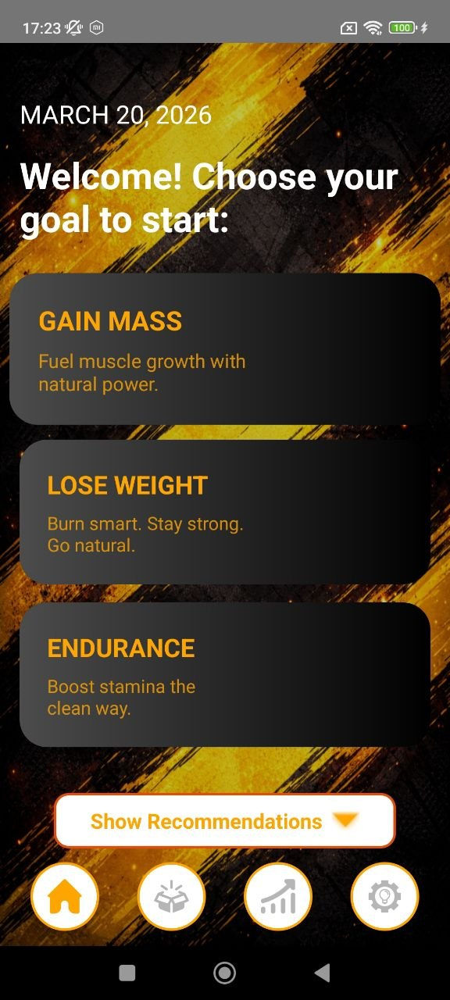
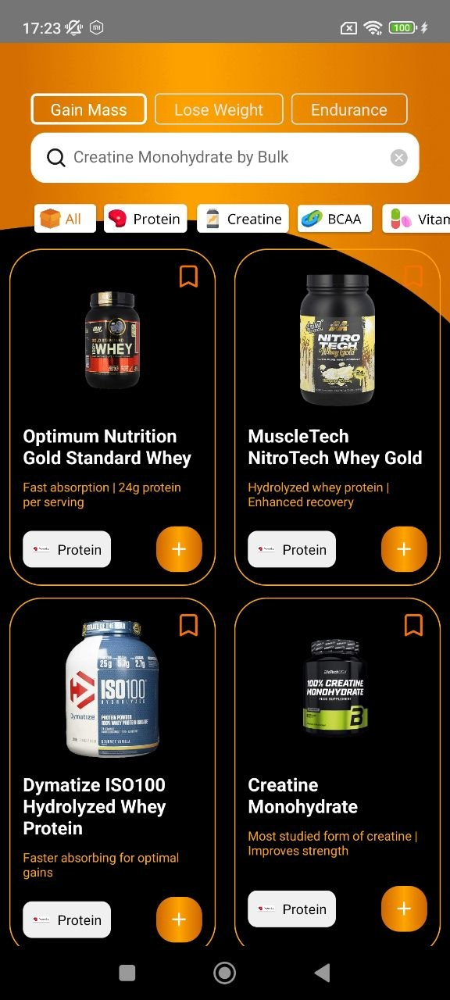
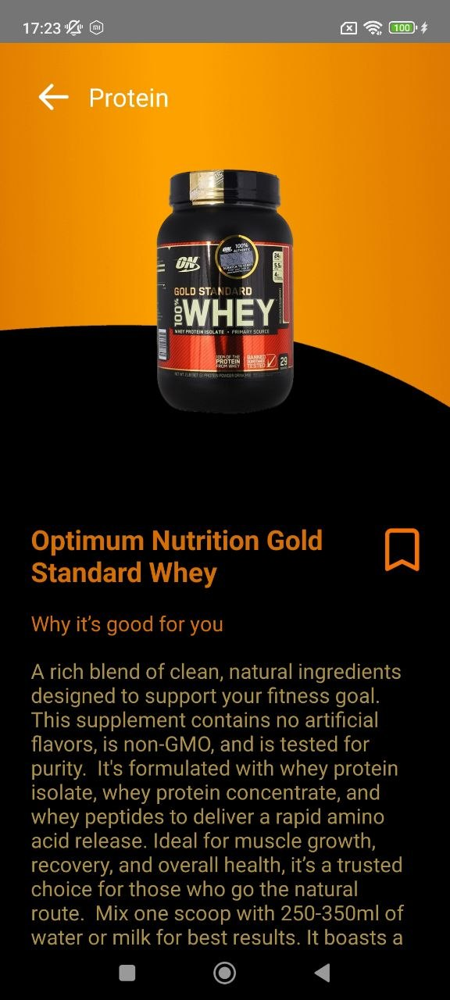
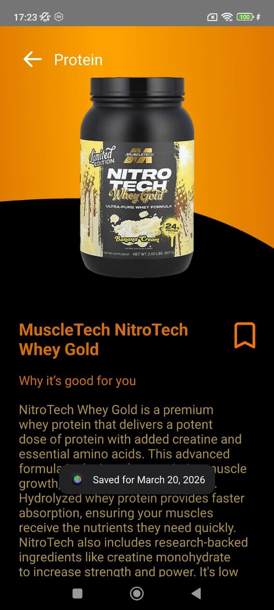
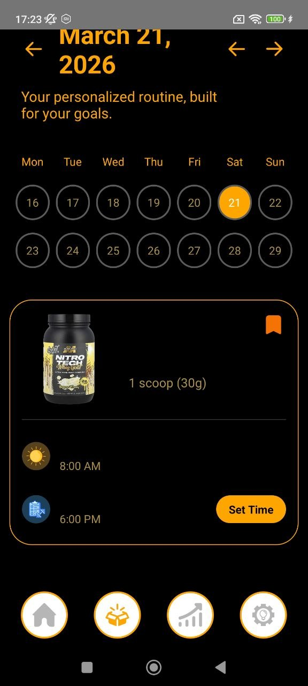
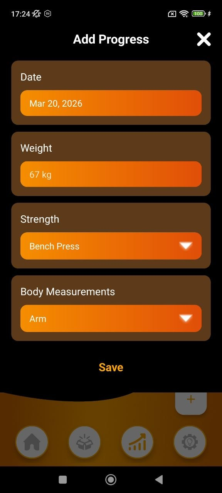

Goal-based fitness system
0
main fitness goals built into the app
0
core product moments highlighted on the site
0
focused place for supplements and tracking
Choose your goal. Build your stack. Track the result.
MLB Gain Mass helps users define a fitness direction, explore supplement options, follow a routine schedule, and monitor progress through a stronger, more focused mobile experience.
Goal setup
Mass • Cut • Endurance
Smart planning
Routine + progress + products

Supplement catalog
Progress tracking
Routine planning
Design
Bold performance landing
Use case
Supplements + routine + progress
Main feeling
Sharp, athletic, premium
Core features
A supplement app built around real gym goals
Instead of filling the site with too many screenshots, this landing focuses on the strongest product moments and turns them into clear feature blocks.
Live preview
Goal Selection
Start with the right fitness direction by choosing whether your focus is gaining mass, losing weight, or improving endurance.
01
Goals
The app begins with intent, not clutter
Users choose a clear training objective first, which makes the rest of the experience feel more personalized.
02
Catalog
Supplement discovery with a strong visual catalog
Product cards keep the app energetic and make different nutrition options easy to scan.
03
Details
Each product gets a focused explanation screen
Detail pages transform the app from a simple list into a more guided supplement experience.
04
Routine
Routine planning keeps supplements actionable
The app goes beyond product browsing and helps users fit intake into a daily schedule.
05
Progress
Track performance, not just purchases
Progress views turn the experience into something measurable and more motivating over time.
06
Settings
Profile and reminders stay under control
A separate settings area helps users shape the app around their own habits and schedule.
Product flow
One focused journey from goal to measurable result
This site uses a zig-zag product story with only a few selected screens, so it feels tighter and more premium than a giant gallery.
Step 01
Pick a fitness direction first
The user starts by choosing a goal. That gives the experience a stronger identity from the very first screen.
Step 02
Explore products that match the goal
Supplement cards and product pages make the app feel like a clean performance marketplace with educational context.


Step 03
Turn products into a real routine
The calendar routine screen moves the app from discovery into actual daily supplement behavior.

Step 04
Measure progress and adjust over time
Progress and analytics screens make it easier to connect routines with physical results.


Reviews
Built for people who want a sharper fitness app experience
Sample review cards for the landing page layout.
★★★★★
“I like that the app starts with a real goal instead of throwing a random list of supplements at you right away.”
Mark T.
Gym user
★★★★★
“The product pages and progress screens make it feel more structured than a basic supplement tracker.”
Chris D.
Strength athlete
★★★★★
“The black and orange design looks strong, and the routine screen makes it easier to actually follow a plan.”
Ryan P.
Mass gain focus
Start your plan
Download MLB Gain Mass and build a clearer path to your goal.
Choose your direction, explore supplements, set routines, and track your progress in one stronger mobile experience.